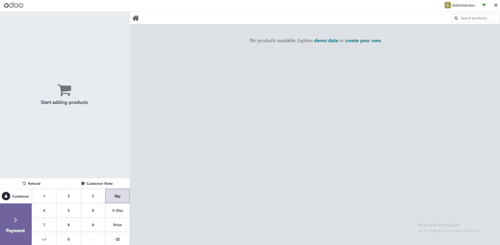
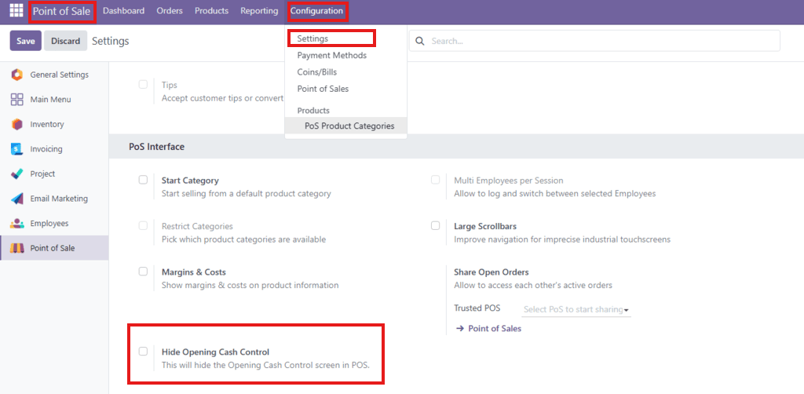
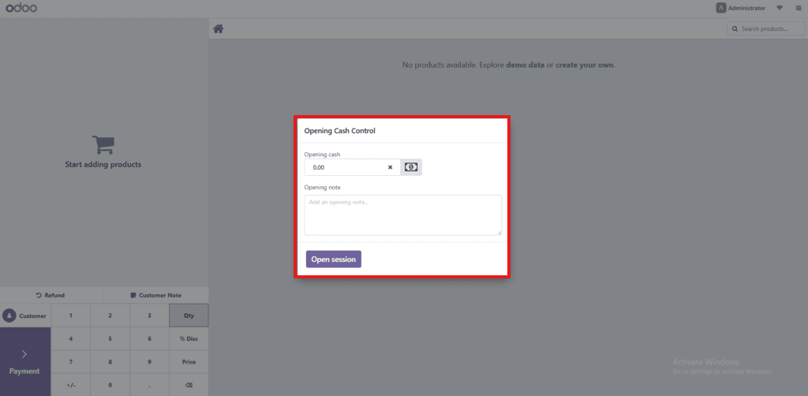

Hide POS Cash Control
Give users the option to hide the Opening Cash Control popup in the Odoo POS system.
Designed for flexibility and cleaner session starts.
Key Features
- Adds a checkbox in POS settings: "Hide Opening Cash Control"
- Automatically hides the popup when enabled
- Toggle any time without restarting the POS app
- Non-intrusive – does not modify any core files
- Improves speed and flow of POS session startups
Usage Guide
- Navigate to Point of Sale → Settings
- Enable the "Hide Opening Cash Control" checkbox
- Save your changes
- Start a new POS session
- The Opening Cash Control popup will be skipped
- To show the popup again, uncheck the box and save
- This can be toggled anytime based on business needs
Screenshots
- POS Settings – Checkbox Enabled

- POS Session – Popup Hidden

- POS Settings – Checkbox Disabled

- POS Session – Popup Visible
